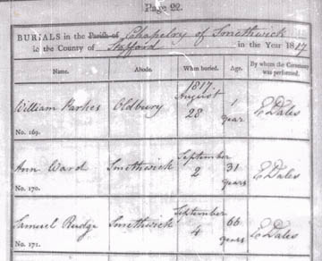

Burial Record for Samuel Rudge

"BURIALS in the Chapelry of Smethwick in the County of Stafford in the year 1817...
No. 171. [Name] Samuel Rudge [Abode] Smethwick [When buried] September 4; [age] 66 years [By whom the Ceremony was performed] E. Dales" (Smethwick Old Church Burials Jan 1813-Sep 1831 p. 22)
Last updated on 23 Mar 2010